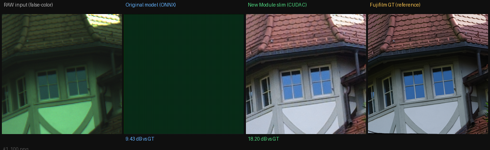
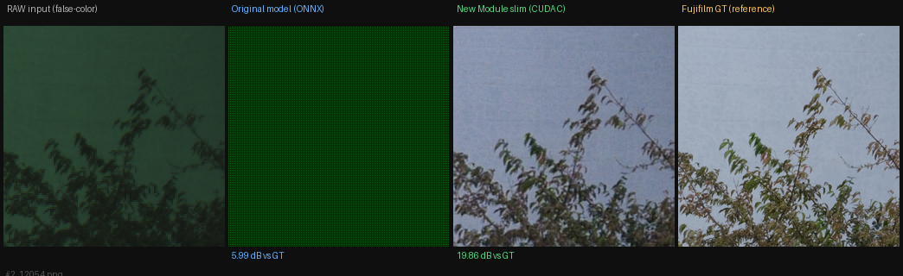
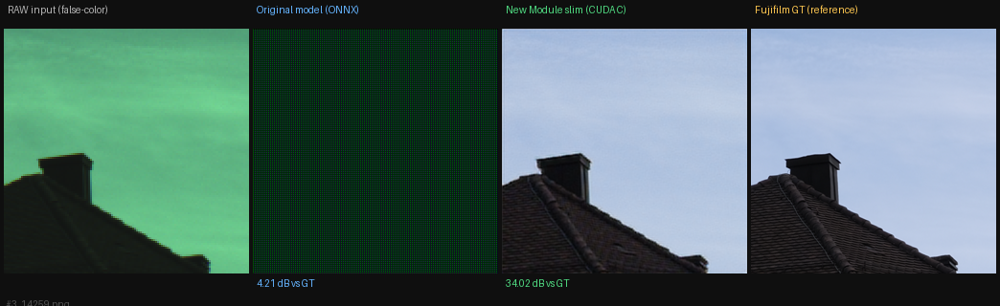
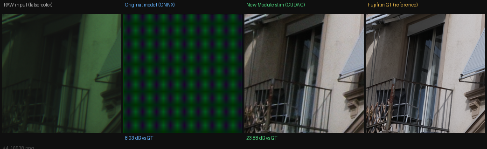
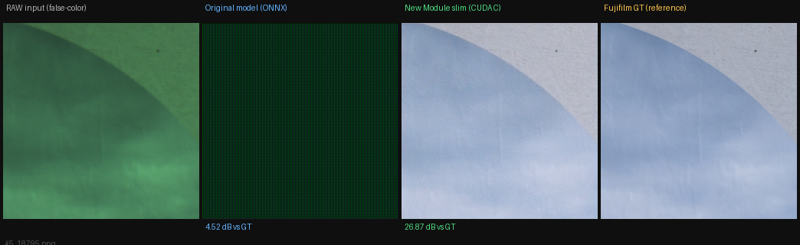
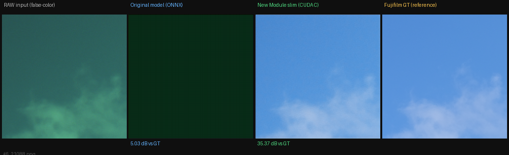
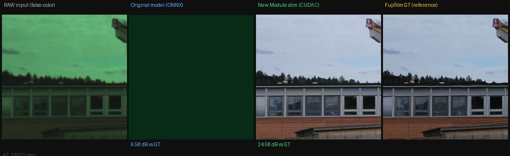
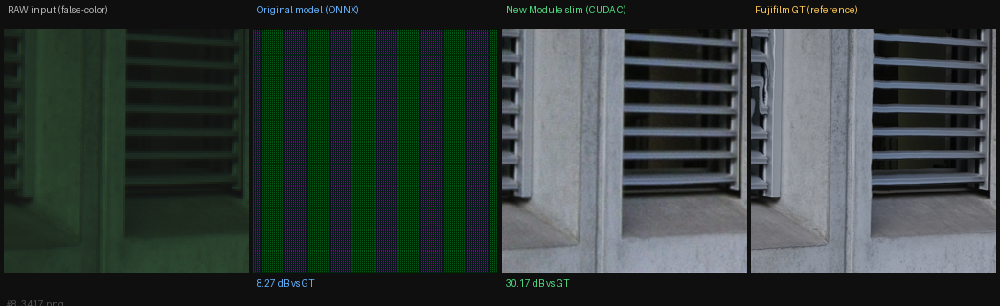
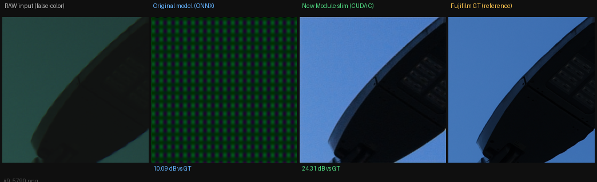
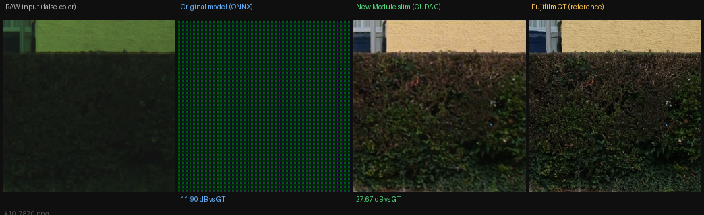

SYENet — 10 Sample Image Comparison
RAW input | Original model (ONNX Runtime) | New Module slim (CUDA C) | Fujifilm GT reference
Note on models: "Original model (ONNX)" = multi-branch unfused SYEISPNet run via ONNX Runtime —
this is the training-time architecture before reparameterization.
"New Module slim (CUDA C)" = reparameterized SYEISPNetS run via the custom CUDA C binary (syenet_isp.exe) at 640+ FPS.
The slim model significantly outperforms the unfused model because reparameterization properly fuses all branches.
7.40 dB
Orig ONNX avg PSNR
26.49 dB
NM CUDA C avg PSNR
PSNR Table
| # | File | Orig ONNX PSNR | NM CUDA C PSNR | Diff | NM Latency |
|---|
| 1 | 100.png |
9.428 |
18.197 |
+8.769 |
1.879 ms |
| 2 | 12054.png |
5.985 |
19.865 |
+13.880 |
1.779 ms |
| 3 | 14259.png |
4.206 |
34.023 |
+29.817 |
2.034 ms |
| 4 | 16538.png |
8.028 |
23.882 |
+15.854 |
2.069 ms |
| 5 | 18795.png |
4.519 |
26.873 |
+22.354 |
1.841 ms |
| 6 | 21088.png |
5.033 |
35.365 |
+30.332 |
1.765 ms |
| 7 | 23021.png |
6.575 |
24.576 |
+18.001 |
1.801 ms |
| 8 | 3417.png |
8.268 |
30.165 |
+21.897 |
1.984 ms |
| 9 | 5790.png |
10.087 |
24.308 |
+14.221 |
1.774 ms |
| 10 | 7870.png |
11.899 |
27.674 |
+15.775 |
1.825 ms |
| AVERAGE |
7.403 dB |
26.493 dB |
+19.090 dB | |
Visual Comparison [RAW Original ONNX NM CUDA C Fujifilm GT]
#1 — 100.png ·
Orig ONNX: 9.43 dB ·
NM CUDA C: 18.20 dB ·
Diff: +8.77 dB

#2 — 12054.png ·
Orig ONNX: 5.99 dB ·
NM CUDA C: 19.86 dB ·
Diff: +13.88 dB

#3 — 14259.png ·
Orig ONNX: 4.21 dB ·
NM CUDA C: 34.02 dB ·
Diff: +29.82 dB

#4 — 16538.png ·
Orig ONNX: 8.03 dB ·
NM CUDA C: 23.88 dB ·
Diff: +15.85 dB

#5 — 18795.png ·
Orig ONNX: 4.52 dB ·
NM CUDA C: 26.87 dB ·
Diff: +22.35 dB

#6 — 21088.png ·
Orig ONNX: 5.03 dB ·
NM CUDA C: 35.37 dB ·
Diff: +30.33 dB

#7 — 23021.png ·
Orig ONNX: 6.58 dB ·
NM CUDA C: 24.58 dB ·
Diff: +18.00 dB

#8 — 3417.png ·
Orig ONNX: 8.27 dB ·
NM CUDA C: 30.16 dB ·
Diff: +21.90 dB

#9 — 5790.png ·
Orig ONNX: 10.09 dB ·
NM CUDA C: 24.31 dB ·
Diff: +14.22 dB

#10 — 7870.png ·
Orig ONNX: 11.90 dB ·
NM CUDA C: 27.67 dB ·
Diff: +15.78 dB
